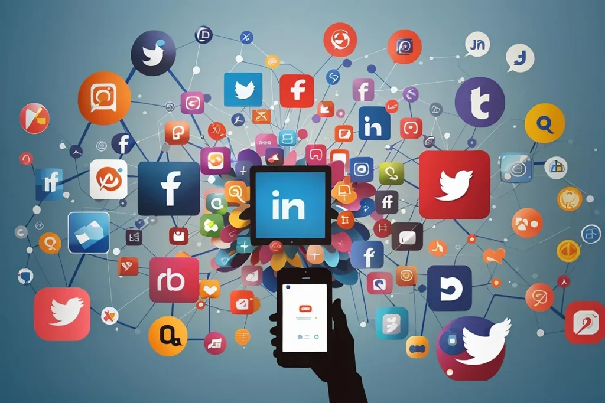

To begin with, I think social media is a fantastic tool for a lot of adults and teens. In the first place, it makes it possible for those who live far apart or struggle to find time to hang out to stay in touch. When used responsibly, social media can help us make lifelong memories and online friendships. Second, most marketing is currently done online. Companies use social media postings or advertisements to connect with their target audience. Since social media is widely used, reaching a wider audience is less costly. Lastly, it gives us a source of enjoyment that might improve our attitude for the day. During our free time, we can engage in social interactions and enjoy a dopamine rush while browsing through our phones. In conclusion, I believe social media is excellent for adults and teens, and it can be especially helpful for children when used appropriately. Social media thrives and is beneficial for us because of things like friendships, marketing and business, the entertainment value, and many more.
